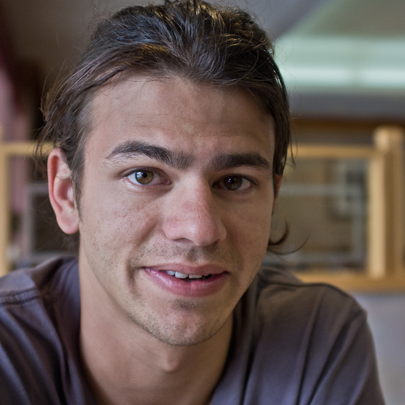
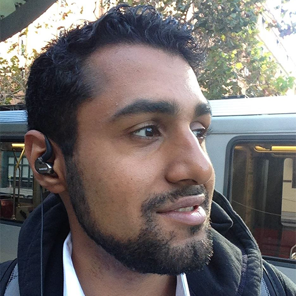
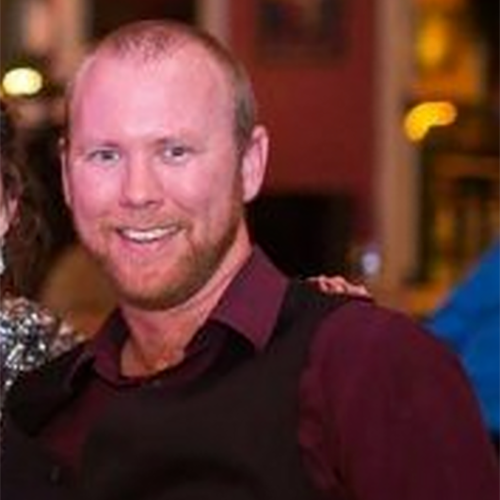
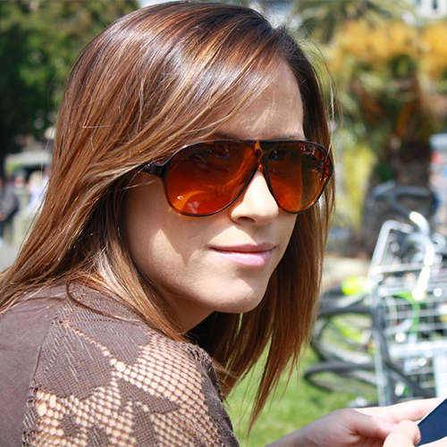
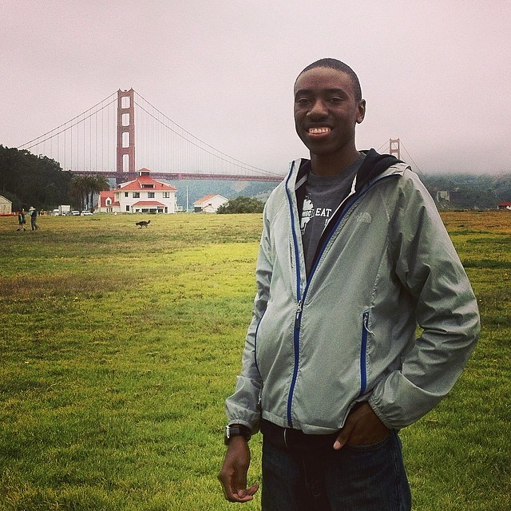

OUR STARS
OUR STARS
About Our Team
Our team was founded by early Yammer engineers with a shared ethos of rapid, product-focused, design and development followed by measurement and informed iteration. Since then we’ve added some of Silicon Valley’s brightest engineering and design stars to our roster to provide the best team possible for a wide array of project needs and technology stacks.
We’ve built a team comprised of multi-talented, product-centric, design and engineering experts. This allows us to take a project’s needs and create the smallest possible team to tackle it while distributing the work enough to get it done on time.
Wil Everts, Founding Partner
Yammer
Wikia
Zivity
Strategic Product Consulting
Product Conceptualization
User Experience Design
Branding
Team Management and Culture
Wil is a product-savant who has been designing and developing web applications since 1994. He loves conceptualizing features, designing user experiences, directing creatives, and helping clients ship killer products.
Mike Ihbe, Founding Partner
Yammer
YouNoodle
Amazon
Apple
Strategic Technical Consulting
Application Architecture
Scalability and DevOps
Full Stack Engineering
Team Management and Culture
Mike is a product-focused enginner who is an expert in a dizzying variety of technologies. He has loads of experience managing fast-moving development teams, designing systems, and scaling large applications.

Dylan Jhaveri
Procore
Minimal
Project Team Leadership
End-to-End Engineering
iOS Development
Dylan is a product minded end-to-end developer who has never met a challenge he didn’t find stimulating. When he’s not hacking on new technology or leading projects for our clients he enjoys surfing and travel.

Sargun Dhillon
Yammer
deCarta
Strategic Technical Consulting
Scalability and DevOps
Back-End Engineering
Sargun is a developer who likes to get dirty with distributed systems, databases, networking, and operations engineering. He has experience in scaling deployments and running massive apps.

Brendan McElligott
Yammer
Beauty Noted
Wheelz
Strategic Technical Consulting
Project Team Leadership
End-to-End Engineering
Brendan is a product focused Lead Developer who is comfortable leading cross-functional teams of developers, engineering in most environments, working with APIs, and handling tricky database architectures.

Julie Horvath
Yammer
Cherry
GitHub
AndYet
Product Consulting
User Experience Design
Front-End Engineering
Julie is an awesome designer who has a knack for creating playful and engaging interfaces. She is an in-browser design expert who is also a well known tech diversity advocate.
Matt Nishiguchi
Minimal
Freelance
Product Consulting
User Expereince Design
Front-End Engineering
Matt is a front end web developer and designer who has a knack for product conceptualization. He’s worked with us on over a dozen projects for clients large and small.

Tenji Tembo
Imaging Research Center
Code2040 Fellow
User Interface Design
Front-End Engineering
Quality Assurance Testing
Tenji joined us as a Code2040 Fellow and is now working with us as a UX Developer: designing interfaces, front-end development, and QAing applications on internal and client projects.
Dosty Everts
Brady Corporation
Back-End Engineering
iOS Development
Quality Assurance Testing
Dosty joined us after his internship where he led a team of five students in building our Scoreboard product. Today, he works as a back end developer on internal and client projects.
Tanya Ganz
Reuters
Merrill Lynch
Deutsche Bank
UBS
Operations
Finance
Human Resources
We rely heavily on Tanya’s vast business expertise and amazing people skills to help us keep our clients happy, the bills paid, and lights turned on!